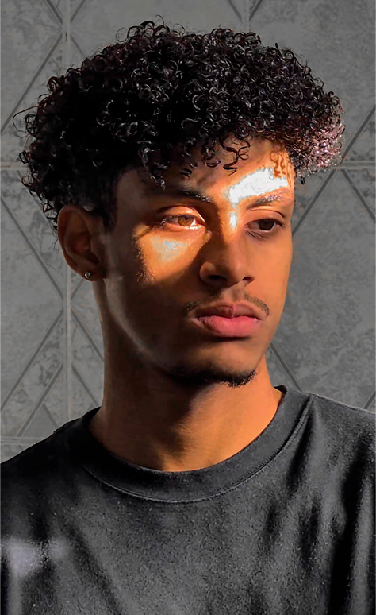

Desde 2021 venho construindo uma trajetória sólida pela tecnologia. Meu interesse pela programação nasceu com um curso sobre Lógica de Programação do Gustavo Guanabara, que despertou em mim a curiosidade de entender como funciona e como realizar a programação por trás dos aplicativos cotidianos.
Desde então, investi em ampliar meus conhecimentos, com isso também incluindo 2 anos de experiência acadêmica no curso de Engenharia de Software pela Unicesumar, o qual atualmente se encontra trancado, porém tenho interesse em retomar o curso em 2027 após finalizar ADS. Por conta desses 2 anos tenho noções básicas em: Programação orientada a objetos, redes de computadores, Análise e projeto orientado a objetos, estrutura de dados, engenharia de requisitos entre outros, além disso, conto com um curso de C# e um de Banco de Dados com MariaDB que me trouxeram noções básicas e práticas. No momento estou direcionando meus estudos para o desenvolvimento Front-End, com foco em HTML, CSS e JavaScript.
O que me diferencia é a dedicação constante em aprender e aplicar o que estudo, sempre buscando transformar teoria em prática e gosto de aprender com os mais experientes na área. Vejo cada desafio como uma oportunidade de crescimento e acredito que minha combinação de base técnica, disciplina e vontade de evoluir é o que me torna um candidato preparado para entregar resultados e crescer junto com qualquer equipe.
